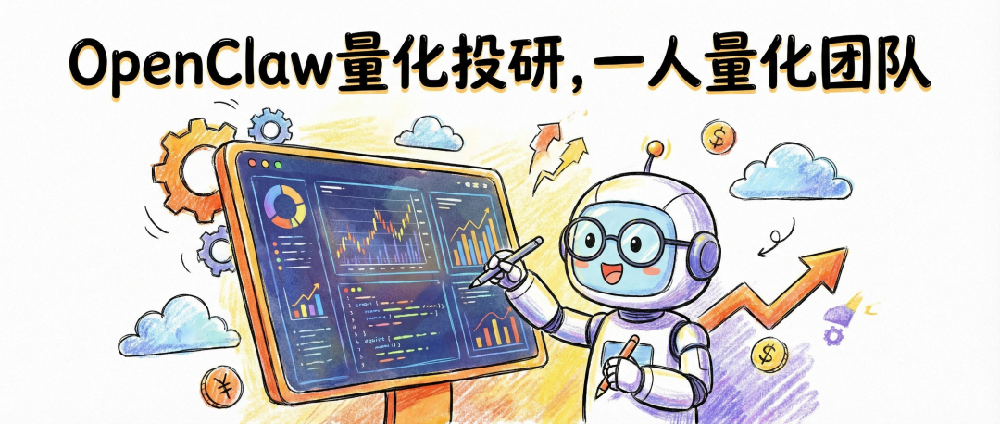
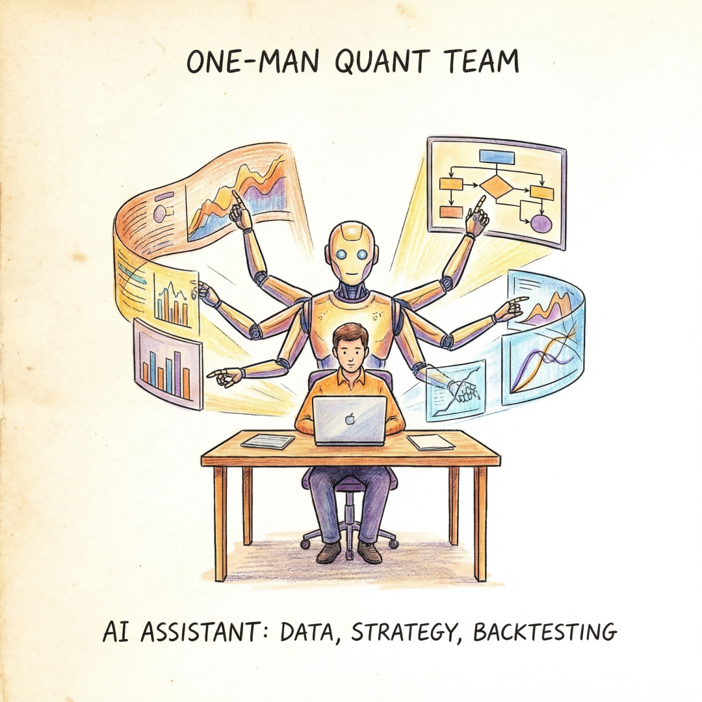
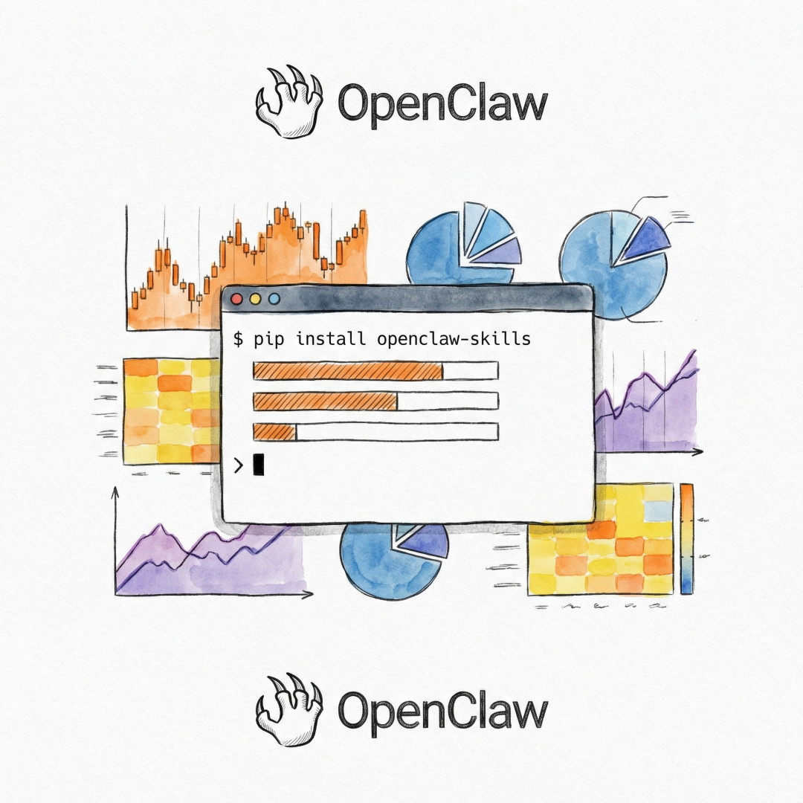
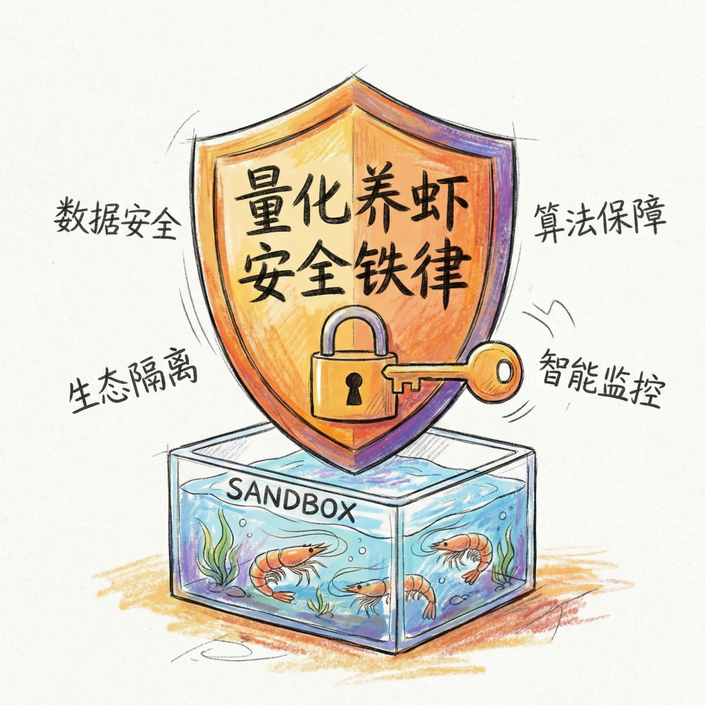

///
PART 01
导语
想象一下：你一个人就是一个完整的量化团队。
选股、回测、研报解析、公告监控、策略生成——全部自动化完成。这不是科幻电影，而是OpenClaw正在为A股投资者实现的现实。
OpenClaw已经以其极低门槛、极强自动化能力，彻底改变了传统量化研究的工作模式。让"一人量化团队"从梦想照进现实。
///
PART 02
什么是"一人量化团队"？
传统量化投资需要：
- ❌ 数据工程师：获取和清洗数据
- ❌ 策略研究员：设计和测试策略
- ❌ 开发人员：编写和维护代码
- ❌ 风控人员：监控风险和异常
- ❌ 大量资金：购买昂贵的终端和数据
有了OpenClaw：
- ✅ 数据获取：一键完成
- ✅ 策略生成：AI辅助设计
- ✅ 回测分析：自动输出报告
- ✅ 智能监控：24/7不间断
- ✅ 成本低廉：本地部署，零订阅费
无论是个人投资者、金融工程师、券商研究员，还是小型量化工作室，都能通过它快速搭建属于自己的AI投研系统，大幅提升研究效率、降低开发成本。

///
PART 03
一、量化投研的技能生态
ClawHub上的金融技能
OpenClaw的ClawHub技能市场拥有超过300个金融投资相关技能，涵盖：
数据获取类：
yahoo-finance- 获取实时股价、历史数据、财报、加密货币价格market-data- 实时市场数据源和金融API集成stock-analysis- 综合市场分析和股票研究工具
交易策略类：
fin-cog- 金融认知分析和策略生成crypto-cog- 加密货币交易和区块链分析portfolio-manager- 投资组合管理和资产配置
实用工具：
trading-signals- 自动交易信号生成和分析quant-tools- 量化分析工具集risk-calculator- 风险计算和管理工具
安装方式
⚠️ 重要提醒：
- 安装任何技能前，务必查看其
SKILL.md文件 - 了解技能的权限要求和数据访问范围
- 金融类技能可能涉及高权限操作，需格外谨慎
- 避免在技能中存储真实交易密钥和密码

///
PART 04
二、量化场景真实指令示例
1️⃣ 智能选股
传统做法：
- 手动导出数据到Excel
- 编写筛选公式
- 逐个查看结果
- 耗时：2-3小时
OpenClaw做法：
结果：
- 自动获取数据
- 筛选符合条件的股票
- 输出结构化表格
///
2️⃣ 研报分析
传统做法：
- 阅读几十页研报
- 手动提取关键信息
- 整理笔记和要点
- 耗时：2-4小时
OpenClaw做法：
结果：
- 自动提取核心观点
- 整理关键财务数据
- 生成可执行的摘要
///
3️⃣ 投资组合跟踪
传统做法：
- 手动记录每笔交易
- Excel计算收益率
- 盯盘查看持仓
- 耗时：每天30分钟+
OpenClaw做法：
结果：
- 自动更新持仓数据
- 计算收益指标
- 生成趋势图表
///
4️⃣ 市场监控
传统做法：
- 盯盘看行情软件
- 设置预警指标
- 手动记录异常
- 容易遗漏
OpenClaw做法：
结果：
- 24/7不间断监控
- 多条件组合预警
- 即时推送通知
- 关联新闻分析
///
PART 05
三、量化养虾必须遵守的6条安全铁律
⚠️ 重要提醒：OpenClaw拥有高系统权限，必须在沙箱、隔离、权限收敛的前提下使用。

1️⃣ 绝不使用个人主力机部署
风险：
- 意外删除重要文件
- 敏感数据泄露
- 系统被恶意控制
正确做法：
- ✅ 使用独立服务器
- ✅ 使用独立电脑
- ✅ 隔离重要数据与密钥
- ✅ 专机专用
///
2️⃣ 强制开启沙箱模式
风险：
- AI可能访问不该访问的文件
- 命令执行范围过大
正确做法：
- ✅ 限制文件访问范围
- ✅ 禁止访问系统敏感目录
- ✅ 设置白名单目录
- ✅ 定期审查日志
///
3️⃣ 禁止存储明文密钥与交易API
风险：
- 账户被盗
- 资金损失
- 数据泄露
正确做法：
- ✅ 绝不将交易密码存入OpenClaw
- ✅ 绝不将券商API Key存入OpenClaw
- ✅ 使用环境变量或密钥管理工具
- ✅ 定期轮换密钥
///
4️⃣ 关闭高危命令执行
风险：
- 误删除系统文件
- 破坏系统稳定性
- 数据永久丢失
正确做法：
- ✅ 禁止rm命令
- ✅ 禁止sudo命令
- ✅ 禁止格式化操作
- ✅ 禁止系统修改操作
///
5️⃣ 定期备份策略与数据
风险：
- 硬盘损坏
- 系统崩溃
- 人为误操作
正确做法：
- ✅ 自动备份策略文件
- ✅ 自动备份配置文件
- ✅ 自动备份报告文件
- ✅ 多地备份（云+本地）
///
6️⃣ 不信任模型直接输出的投资结论
风险：
- AI存在幻觉
- 数据理解错误
- 逻辑推理缺陷
正确做法：
- ✅ 所有投资决策必须人工复核
- ✅ 验证数据来源和准确性
- ✅ 理解策略逻辑和风险
- ✅ 小资金测试后再放大
核心原则：
///
PART 06
四、高频常见问题解答
Q1：无法访问Web控制台？
可能原因：
- 安全组未放行18789端口
- 容器未启动
- 端口被占用
解决方案：
///
Q2：数据获取失败、行情无法拉取？
可能原因：
- 网络权限不足
- 数据源接口变更
- 技能未正确配置
解决方案：
- 检查网络连接
- 更新技能到最新版本
- 查看技能配置文件
- 检查API密钥是否有效
///
Q3：策略代码报错、回测失败？
可能原因：
- 模型生成代码存在逻辑问题
- 数据路径错误
- 依赖库未安装
解决方案：
- 人工审核生成代码
- 检查数据文件路径
- 安装必要的Python库
- 逐步调试排查
///
Q4：服务器CPU/内存占用过高？
可能原因：
- 回测任务消耗资源大
- 关闭无用技能
- 服务器配置不足
解决方案：
- 限制回测时间范围
- 禁用不需要的技能
- 升级服务器配置
- 设置资源使用上限
///
Q5：担心数据泄露、权限风险？
防护措施：
- ✅ 开启沙箱、文件限制
- ✅ 高危命令禁用
- ✅ 不存放真实交易密钥
- ✅ 使用独立隔离环境
- ✅ 定期审计日志
///
PART 07
五、总结
OpenClaw正在重塑量化投资的工作方式。
对于个人投资者：
- 从"信息不对称"到"信息平等"
- 从"手工劳动"到"智能辅助"
- 从"盲目决策"到"数据驱动"
对于专业人士：
- 研究效率提升10倍+
- 开发成本降低80%+
- 从重复劳动中解放
但越是强大的工具，越需要清醒的头脑：
- 守住边界：AI是工具，不是决策者
- 掌握主动：理解策略，控制风险
- 持续学习：市场在变，策略也要进化
- 严格风控：保本比盈利更重要
小龙虾越聪明，养虾人越需要理性。
在人与AI的协作中，保持清醒、守住边界、掌握主动权，才是量化时代真正的长期优势。
///
PART 08
互动时间
你开始用OpenClaw做量化投资了吗？遇到了哪些问题？欢迎在评论区分享经验！
///
参考来源：
- OpenClaw官方文档
- A股量化投研实战案例
- 社区最佳实践
///
*本文基于真实推文内容创作，介绍OpenClaw在A股量化投研领域的实战应用*
THANKS FOR READING
🦐 龙虾 · OpenClaw 技术分享